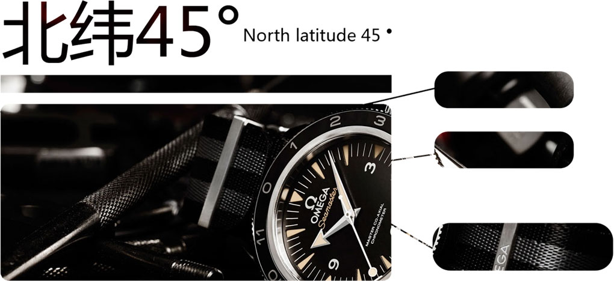

手表的制作及生产都基于一个简单而机智的发明，这就是“弹簧”，它能够收紧并储存能量，又能慢慢地把能量释放出来，以推动手表内的运行装置及指针，达到显示时间的功能，手表内的这种弹簧装置被称为主弹簧手表工作原理手表工作原理（Mainspring）。手表构造手表由表头、表带（表扣）组成。 其中表头的零部件包括：机芯、表壳、底盖、镜面、字面（常说的表盘）、指针、把的（调时间的，也叫按的）、令（部分表种要求）。
As a technology precedeence in deep processing industry of egg products as well as the sales champion inthe deep processing
markrt of egg products, quality is the foundation to guarantee en terprise development. Keeping the six perfect aspects of quality,
safety,nutrition,health,green,innovation in mind and sticking to ensuring the overall industryial chain from the fresh eggs to the deep
processing, our company has established the new standards for the deep processing industry of eggproducts and set an advisable and
practical case template for the healthy, efficient and well-prganized development of the deep processing industry of egg products.

A.手表工作原理，手表是用来指示时间的一种精密仪器，该仪器的原理是利用一个周期恒定的、持续振动的振动系统作为标准。如果知道了振动系统完成一手表次全振动所需要的时间（振动周期），并计算出振动次数，那么，振动这么多次之后所经历的时间就等于振动周期乘以振动次数。即时间=振动周期×振动次数.
B.手表工作原理，手表是用来指示时间的一种精密仪器，该仪器的原理是利用一个周期恒定的、持续振动的振动系统作为标准。如果知道了振动系统完成一手表次全振动所需要的时间（振动周期），并计算出振动次数，那么，振动这么多次之后所经历的时间就等于振动周期乘以振动次数。即时间=振动周期×振动次数.